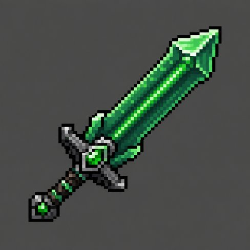
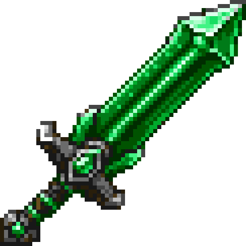

What a mod actually is
You don't build the sword from scratch here. It's already built, tested, and working in the template. You read it in an order that makes sense, run it, change it, break it, fix it. By the end you understand every file and can add your own items, tools and weapons.
Assumed: you can read code in some language and you've played Minecraft. No Java, no modding experience.
The mental model
Minecraft: Java Edition is a Java program. When you press Play, the launcher starts a JVM with the game's jar. A mod loader (Fabric here; NeoForge is the other big one) is a thin layer that starts before the game and loads extra jars into the same JVM. Each mod gets a chance to run code at startup: that's your entrypoint.
What your entrypoint does, 90% of the time, is register things. The game keeps big tables called registries: one for items, one for blocks, one for entities. Every entry has an id like minecraft:diamond_sword. Your mod adds trontmod:emerald_sword to the item registry, and from then on the game treats it like any other item: inventories, the ground, recipes, commands.
Registering is half of it. Two other parts of the game need to know about your item:
- The client (the part that draws) needs a model and a texture: JSON and PNG under
assets/. Same format as a resource pack. - The server (the part that runs the rules, even in singleplayer) needs recipes and tags: JSON under
data/. Same format as a data pack.
So a mod is: a bit of Java that registers stuff, plus a resource pack, plus a data pack, zipped into one jar. Modern Minecraft leans hard on the data side. The Emerald Sword is about 25 lines of Java and 7 JSON files.
Setup
Three things. The third is the zip at the top of this page.
1. A JDK, version 25
Minecraft 26.2 is compiled for Java 25, so your mod must be too. A JDK is compiler + runtime; the launcher's bundled Java is a runtime only and can't compile. Get Temurin 25 from adoptium.net, or on Windows:
winget install EclipseAdoptium.Temurin.25.JDKGradle finds JDKs in ~/.jdks and the usual install dirs on its own. You don't need to set JAVA_HOME.
2. IntelliJ IDEA (Community is free)
Any editor works, but IntelliJ understands Gradle projects, opens Minecraft's own source when you ctrl-click, and has a one-click Minecraft Client run button. Optional: the Minecraft Development plugin (Settings › Plugins).
3. The template
Unzip trontmod-template.zip somewhere without spaces in the path. To start your own mod later, copy the folder and rename three things:
settings.gradle:rootProject.namesrc/main/resources/fabric.mod.json:id,name,entrypoints- the Java package folders
xyz/tront/trontmodandMOD_IDinTrontMod.java
The mod id is the one that matters: it's the namespace on every item (trontmod:emerald_sword), the folder name under assets/ and data/, and the prefix in the lang file. Lowercase letters, digits, underscores.
First run
gradlew runClientThe first time, this downloads Gradle itself, the Loom plugin, Minecraft 26.2, its libraries and Fabric API, then remaps a lot. 45 seconds to 10 minutes depending on your connection. Every later run is about 10 seconds. A Minecraft window opens, offline, with a fake player name. Create a world, press E: the Combat tab has the Emerald Sword right after the diamond one; Ingredients has the Tront Coin.
That window is a development client. It uses run/ inside the project for its saves and options, never your real .minecraft. Close it whenever.
In IntelliJ: File › Open › the folder. Wait for the Gradle sync (bottom right). A run configuration named Minecraft Client appears at the top; the green arrow does the same as gradlew runClient, with the debugger attached.
The three commands you'll live in
gradlew is the Gradle wrapper: a tiny script that downloads the exact Gradle version this project wants, so nobody installs Gradle. Windows runs gradlew.bat; typing gradlew finds it.
The skeleton
Four files, in this order. Everything else in the repo is an item (lessons 3 and 4) or a test (lesson 5).
2.1 fabric.mod.json: the mod's ID card
{
"id": "trontmod",
"version": "${version}",
"entrypoints": {
"main": ["xyz.tront.trontmod.TrontMod"],
"client": ["xyz.tront.trontmod.client.TrontModClient"]
},
"depends": {
"fabricloader": ">=0.19.3",
"minecraft": "~26.2",
"java": ">=25",
"fabric-api": "*"
}
}Fabric reads this out of the jar. id is your namespace. entrypoints.main is the class Fabric calls on both client and server; entrypoints.client only on the client. depends is enforced: launch with the wrong Minecraft and you get a clean error screen instead of a crash. ${version} is filled in from gradle.properties at build time.
2.2 TrontMod.java: the entrypoint
public class TrontMod implements ModInitializer {
public static final String MOD_ID = "trontmod";
public static final Logger LOGGER = LoggerFactory.getLogger(MOD_ID);
@Override
public void onInitialize() {
// Runs once at startup. Registries are open; no world or player exists yet.
ModItems.initialize();
LOGGER.info("TrontMod loaded");
}
/** trontmod:<path>. Use this everywhere instead of spelling the namespace out. */
public static Identifier id(String path) {
return Identifier.fromNamespaceAndPath(MOD_ID, path);
}
}onInitialize() runs once, before any world exists. Right time to register things; wrong time to touch worlds, players or rendering. id("emerald_sword") builds trontmod:emerald_sword; you'll use it constantly. LOGGER.info writes to the console and logs/latest.log: grep for TrontMod loaded and you know your mod ran.
2.3 ModItems.java: where the mod actually lives
Sixty lines. Lessons 3 and 4 walk it top to bottom.
2.4 build.gradle + gradle.properties: the build
minecraft_version=26.2
loader_version=0.19.3
loom_version=1.17-SNAPSHOT
fabric_api_version=0.158.0+26.2When a new Minecraft drops, change these (from fabricmc.net/develop), fix whatever stopped compiling, done. build.gradle you rarely touch: it applies Loom (the Fabric Gradle plugin that knows how to download Minecraft and set up run configs), declares dependencies, sets Java 25, and configures the two test layers.
Two source folders: src/main runs everywhere; src/client is client-only. Put rendering code in client and it cannot crash a dedicated server.
The simplest item: Tront Coin
One Java line and four small files. That's every item's floor.
3.1 The Java line
public static final Item TRONT_COIN = register("tront_coin", Item::new, new Item.Properties());
public static Item register(String name, Function<Item.Properties, Item> factory, Item.Properties props) {
ResourceKey<Item> key = ResourceKey.create(Registries.ITEM, TrontMod.id(name));
Item item = factory.apply(props.setId(key));
return Registry.register(BuiltInRegistries.ITEM, key, item);
}Identifierisnamespace:path, heretrontmod:tront_coin. Path = the item's name, and it must match the JSON/PNG filenames exactly.ResourceKey<Item>is an Identifier plus which registry it belongs to. Since 1.21.2 an item must know its own key before it's constructed, henceprops.setId(key).Item.Propertiesis a bag of settings: stack size, durability, food, rarity. For the coin it's empty: stacks to 64, does nothing.Item::newis the constructor of the plainItemclass. Want behaviour (right-click does something)? Writeclass MyItem extends Item, override a method, passMyItem::new.Registry.register(BuiltInRegistries.ITEM, key, item)is the moment the item exists.
Why static final fields? They run exactly once, when the class is first touched. ModItems.initialize() is called from the entrypoint precisely to touch the class at the right moment: after the game is ready for registration, before registries freeze. Registering twice, too early, or too late all crash; this pattern avoids all three.
3.2 The four files the client needs
| File (under assets/trontmod/) | What it says |
|---|---|
items/tront_coin.json | "To draw trontmod:tront_coin, use model trontmod:item/tront_coin." The client item definition, new since 1.21.4; fancier logic (different model when damaged) lives here. |
models/item/tront_coin.json | "parent": "minecraft:item/generated" plus the texture. generated = flat sprite extruded 1 px, like most items. Tools use minecraft:item/handheld, which adds the in-hand tilt. |
textures/item/tront_coin.png | 16×16 PNG with transparency. |
lang/en_us.json | "item.trontmod.tront_coin": "Tront Coin". Key is item.<namespace>.<path>. No entry = the raw key shows in-game. |
Nothing here is Fabric-specific; it's the resource pack format. If you've made a texture pack, you've done this.
3.3 Creative tab
Registered items don't appear in the creative menu on their own. Fabric API gives you an event per tab:
CreativeModeTabEvents.modifyOutputEvent(CreativeModeTabs.INGREDIENTS)
.register(output -> output.accept(TRONT_COIN));accept appends; insertAfter(Items.DIAMOND_SWORD, X) and insertBefore place it. Without this the item still exists (/give works, search works) but nobody finds it.
gradlew runClient, new creative world,/give @s trontmod:tront_coin.- Change the name in
lang/en_us.json, rungradlew processResources, press F3+T in-game. Name updates. - Change
new Item.Properties()tonew Item.Properties().stacksTo(1), relaunch. Doesn't stack. - Rename the PNG, relaunch. Purple-black checker: that's "missing texture", and you'll see it a hundred times. Check the filename against the model JSON.
The Emerald Sword
Same skeleton as the coin plus a material, weapon stats, a crafting recipe and two tags.
4.1 Items are bags of data now
In old tutorials a sword is new SwordItem(ToolMaterials.DIAMOND, 3, -2.4F, ...). That class is gone. Since 1.21.5 an item's behaviour is mostly data components attached to it: MAX_DAMAGE, ATTRIBUTE_MODIFIERS, TOOL, WEAPON, REPAIRABLE, ENCHANTABLE, FOOD. Item.Properties has builder methods that set them, and the plain Item class reads them. Vanilla's diamond sword is literally:
registerItem(ItemIds.DIAMOND_SWORD, new Item.Properties().sword(ToolMaterial.DIAMOND, 3.0F, -2.4F));and ours is the same shape:
public static final Item EMERALD_SWORD = register("emerald_sword", Item::new,
new Item.Properties().sword(EMERALD_MATERIAL, 3.0F, -2.4F));.sword(material, attackDamage, attackSpeed) attaches, in one call: durability, repair items and enchantability (from the material), an attack-damage and attack-speed attribute modifier, a TOOL component (instant-mines cobwebs, 1.5× on bamboo, 2 durability per block) and a WEAPON component (1 durability per hit, disables shields).
Same idea for other tools: .pickaxe(material, 1.0F, -2.8F) on a plain Item. Shovels, axes and hoes still use small subclasses (ShovelItem, AxeItem, HoeItem) because they have right-click behaviour. Ctrl-click Items.DIAMOND_SHOVEL in IntelliJ and read it.
4.2 The material
public static final ToolMaterial EMERALD_MATERIAL = new ToolMaterial(
BlockTags.INCORRECT_FOR_DIAMOND_TOOL, // blocks this tier fails to drop
1200, // durability
8.0F, // mining speed
3.0F, // attack damage bonus
20, // enchantability
EMERALD_TOOL_MATERIALS); // what repairs it (an item tag)| material | can't mine | durability | speed | dmg bonus | enchant | repairs with |
|---|---|---|---|---|---|---|
| IRON | INCORRECT_FOR_IRON_TOOL | 250 | 6 | 2 | 14 | #iron_tool_materials |
| DIAMOND | INCORRECT_FOR_DIAMOND_TOOL | 1561 | 8 | 3 | 10 | #diamond_tool_materials |
| NETHERITE | INCORRECT_FOR_NETHERITE_TOOL | 2031 | 9 | 4 | 15 | #netherite_tool_materials |
| emerald (ours) | INCORRECT_FOR_DIAMOND_TOOL | 1200 | 8 | 3 | 20 | #trontmod:emerald_tool_materials |
4.3 Tags: named lists, defined in JSON
A tag is a list of ids with a name, living in a data pack. Two in this mod:
{ "values": ["minecraft:emerald"] }{ "values": ["trontmod:emerald_sword"] }Tags from all packs merge unless a file says "replace": true, so a file in the minecraft namespace adds to vanilla's list. Why join #minecraft:swords? Vanilla's enchantment rules are tag-based: enchantable/melee_weapon, enchantable/durability and enchantable/sweeping all include #minecraft:swords. One line and Sharpness, Unbreaking and Sweeping Edge work. Miss it and the enchanting table offers nothing.
In Java a tag is referenced by a TagKey; the Java side never lists the contents, the JSON does. The server loads it and syncs it to clients.
public static final TagKey<Item> EMERALD_TOOL_MATERIALS =
TagKey.create(Registries.ITEM, TrontMod.id("emerald_tool_materials"));4.4 The recipe
Copied from vanilla's diamond sword recipe with two ids changed. No Java at all.
{
"type": "minecraft:crafting_shaped",
"category": "equipment",
"key": {
"#": "minecraft:stick",
"X": "#trontmod:emerald_tool_materials"
},
"pattern": ["X", "X", "#"],
"result": { "id": "trontmod:emerald_sword" }
}A # in front of an ingredient means "any item in this tag".
~/.gradle/caches/fabric-loom/26.2/minecraft-common.jar (data) and minecraft-client-only.jar (assets); open with any zip tool. In IntelliJ, External Libraries › minecraft shows the same.Recipes are data-pack content, so the game only re-reads them with /reload (or a relaunch), not F3+T.
4.5 Model and tab
models/item/emerald_sword.json uses "parent": "minecraft:item/handheld" so it tilts in the hand like a sword instead of lying flat like a coin. The creative hook uses insertAfter(Items.DIAMOND_SWORD, EMERALD_SWORD) in the Combat tab.
- Survival world:
/give @s minecraft:emerald 2, a stick, craft it in a table. The "New recipe unlocked" toast means the data pack loaded. - Hit something: 7 damage. Anvil + emerald: repairs. Enchanting table: Sharpness shows up. Hover: durability 1200.
- Change
1200to2500and20to30, relaunch, check the tooltip. That's the whole loop.
Proving it works
Launching the game and clicking around is slow, and you'll forget to check something. The template has two kinds of automated tests; gradlew build runs both and refuses to make a jar if either fails.
5.1 Unit tests (src/test/, about 5 seconds)
ModItemsTest.java boots just enough of Minecraft to fill the registries, registers our items, and checks: the ids exist, the sword has 7 attack damage, 1200 durability, the WEAPON component, and repairs with our tag. No window, no world.
One non-obvious dance in @BeforeAll, worth understanding because you will hit it: since 26.x, an item's components aren't attached when it's registered. The server attaches them when a world loads, because some items reference data-pack registries (trim materials, enchantments). A unit test has no world, so it does what the server does:
@BeforeAll
static void bootGame() {
SharedConstants.tryDetectVersion();
Bootstrap.bootStrap();
ModItems.initialize();
// what the server does at world load; without it new ItemStack(...) throws "Components not bound yet"
BuiltInRegistries.DATA_COMPONENT_INITIALIZERS.build(VanillaRegistries.createLookup())
.forEach(DataComponentInitializers.PendingComponents::apply);
}5.2 Game tests (src/gametest/, about 10 seconds)
TrontModGameTest.java runs inside a real headless server with the mod's data/ loaded. That's the only place recipes and tags can be checked, because they're data-pack content. Three tests: the stats again (now with real components), "is the sword in #minecraft:swords", "did the recipe load". A @GameTest method gets a GameTestHelper; call helper.succeed() at the end or it fails after a timeout.
@GameTest
public void emeraldSwordRecipeLoads(GameTestHelper helper) {
ResourceKey<Recipe<?>> key = ResourceKey.create(Registries.RECIPE, TrontMod.id("emerald_sword"));
Optional<RecipeHolder<?>> recipe = helper.getLevel().getServer().getRecipeManager().byKey(key);
helper.assertTrue(recipe.isPresent(), "recipe trontmod:emerald_sword did not load");
helper.succeed();
}build.gradle has eula = true in the configureTests block: that accepts the Minecraft EULA for the throwaway test server.
5.3 The habit
Change something, gradlew build. Green: launch the game and enjoy it. Red: the message names the assertion, before you spent two minutes loading a world.
Art
6.1 The rules of a 16×16 Minecraft item
- Diagonal, pommel bottom-left, tip top-right, touching both corners.
- 3 to 5 tones per material, no gradients, no anti-aliasing.
- Light from top-left: highlight on the upper-left edge, shadow lower-right.
- No black outline. Edges are the darkest tone of that material.
- Guard and pommel are the blade's material; the grip is wood. Every vanilla sword follows this.
- Any power-of-two size works (32, 64), but 16 is what sits next to vanilla without looking imported.
Tools: Aseprite (paid, the standard), Piskel (free, in the browser), Blockbench (free, also does 3D models).
6.2 From an AI image to a texture
Image generators produce "fake pixel art": it looks pixelated, but the grid is uneven and there are hundreds of colours. The template's art/unfake_texture.py fixes that: detects the grid, snaps every cell to one colour, removes the background, recolours the black outline into material-dark, and palette-locks to Mojang's own emerald, iron and wood tones. Drag the handle:


AI output, 1254 pxunfaked, 61 pxpython art/unfake_texture.py art/emerald_sword_source.png art/emerald_sword --outline-tint "#0a4a22" --tint-mix 0.6 --palette vanilla-emeraldHonest result: the 64×64 keeps everything; a mechanical downscale to 16 turns the guard to mush. So the shipped 16×16 was built differently: art/vanilla_sword_16.py takes vanilla's diamond sword skeleton and remaps its tones. Design your own, or start from vanilla's silhouette. Both are in the template's art/ folder.
6.3 The texture loop
Edit PNG → gradlew processResources → F3+T in the running game. No relaunch.
Shipping
gradlew buildmakes build/libs/trontmod-0.1.0.jar. Everything the game needs is inside: classes, assets, data, fabric.mod.json. (The -sources.jar is for other developers; ignore it.)
Your real game: install Fabric Loader once from fabricmc.net/use (pick 26.2; it adds a "fabric-loader" profile to the launcher). Put the jar plus fabric-api-<version>.jar (from Modrinth, matching 26.2) in %APPDATA%\.minecraft\mods\. Launch the Fabric profile.
Friends: send them both jars, same folder. Everyone in a multiplayer world needs the mod; it adds an item, so the server rejects a client without it.
Publishing: Modrinth is where Fabric mods live. You'll need a license in fabric.mod.json, an icon (assets/trontmod/icon.png), and a version bump in gradle.properties per release.
A realm of your own
A whole new dimension (the Emerald Realm), a Nether-style portal into it, a command for the lazy, and a sword that mines. The dimension is zero Java; the portal is ~300 lines, most of them copied from vanilla's nether portal.
Try it first: gradlew runClient, any world, /emeraldrealm. Same command to come back. Then build a 4×5 frame of emerald blocks (2×3 hole, like a nether portal), hold an emerald, right-click the frame.
8.1 The dimension is two JSON files
dimension_type/emerald_realm.json the RULES + LOOKS: height, sky, fog, light, beds, dragon flag, day cycle
dimension/emerald_realm.json which type + which GENERATOR + which BIOMESDrop them in and trontmod:emerald_realm exists in every world, with its own save folder. No world preset, no registration; Java only needs the key to find it (ModDimensions.EMERALD_REALM). The dimension type is vanilla's End file with a few lines changed:
{
"skybox": "end",
"has_ender_dragon_fight": false,
"has_fixed_time": true,
"default_clock": "minecraft:the_end",
"timelines": "#minecraft:in_end",
"min_y": 0, "height": 256, "logical_height": 256,
"attributes": {
"minecraft:visual/sky_color": "#04140c",
"minecraft:visual/fog_color": "#0b2a1c",
"minecraft:visual/sky_light_color": "#41f384",
"minecraft:gameplay/bed_rule": { "can_sleep": "never", "can_set_spawn": "never", "explodes": true },
"minecraft:audio/background_music": { "default": { "sound": "minecraft:music.end", "min_delay": 6000, "max_delay": 24000, "replace_current_music": true } }
}
}has_ender_dragon_fight: the dragon is a boolean now. Flip it and a dragon fight spawns at 0,0.skybox:none,overworldorend. Three sky geometries; everything else about the sky is a colour inattributes.attributes: ~45 environment attributes: fog, sky, light colours, music, ambient sounds, bed rules, respawn anchors, raids, water evaporating...timelines+default_clock: the day cycle. We reuse the End's frozen clock, so it's permanent dusk.
8.2 Terrain without code
worldgen/noise_settings/emerald_realm.json is the End's islands router (the end_islands density function, ~150 lines we didn't write) with default_block swapped to deepslate and a surface rule that puts moss on top and tuff two blocks down. worldgen/biome/emerald_isles.json lists what spawns (endermen) and which features run: an ore feature targeting deepslate, and a block_column of emerald blocks topped with a verdant froglight. Each feature is a configured_feature (what) plus a placed_feature (where, how often). All copied from vanilla files and edited.
"default_block": { "Name": "minecraft:deepslate", "Properties": { "axis": "y" } },
"surface_rule": { "type": "minecraft:sequence", "sequence": [
{ "type": "minecraft:condition",
"if_true": { "type": "minecraft:stone_depth", "surface_type": "floor", "offset": 0, "add_surface_depth": false, "secondary_depth_range": 0 },
"then_run": { "type": "minecraft:block", "result_state": { "Name": "minecraft:moss_block" } } },
{ "type": "minecraft:condition",
"if_true": { "type": "minecraft:stone_depth", "surface_type": "floor", "offset": 2, "add_surface_depth": false, "secondary_depth_range": 0 },
"then_run": { "type": "minecraft:block", "result_state": { "Name": "minecraft:tuff" } } }
]}Want your own terrain algorithm? Subclass ChunkGenerator in Java (fillFromNoise, getBaseHeight...), register its codec, point the dimension JSON at it. Same JSON, different generator.type.
8.3 The portal block
Three pieces, in ModBlocks, EmeraldPortalBlock, EmeraldPortalShape:
- Register a block exactly like an item: key,
setId, construct,Registry.register(BuiltInRegistries.BLOCK, ...). NoBlockItem, you never hold a portal. Properties copied from vanilla's nether portal:noCollision, unbreakable, light 11,noLootTable. - Detect the frame.
EmeraldPortalShapeis vanilla'sPortalShapewith two lines changed: the frame test isemerald_block, the fill is our portal block. It finds a 2..21 by 3..21 rectangle of air bordered by frame blocks, corners optional. Vanilla hardcodes obsidian, which is why it can't be reused directly. - Light it. Fabric's
UseBlockCallbackfires on every block right-click. Holding an emerald, clicked an emerald block? Find a lightable shape next to it, fill it, consume the emerald. The client only checks (so your arm swings); the server places. Break any frame block andupdateShapecollapses the portal one neighbour at a time, exactly like the Nether.
public class EmeraldPortalBlock extends Block implements Portal {
@Override
protected void entityInside(BlockState state, Level level, BlockPos pos, Entity entity, InsideBlockEffectApplier effects, boolean isPrecise) {
if (entity.canUsePortal(false)) {
entity.setAsInsidePortal(this, pos); // vanilla handles the overlay, the delay, the cooldown
}
}
@Override
public TeleportTransition getPortalDestination(ServerLevel currentLevel, Entity entity, BlockPos portalEntryPos) {
return EmeraldPortalLinker.destination(currentLevel, entity, portalEntryPos); // the only real question
}
}Portal is the whole trick: a block that implements it hands the entity to vanilla's portal processor and only has to answer "where does this go?".
8.4 Linking the two sides
EmeraldPortalLinker.destination() is vanilla's nether logic, simplified: scale the coordinates (1:1 here; coordinate_scale in the dimension type is what makes the Nether 8:1), search 128 blocks for an existing portal using a point of interest (PoiHelper.register in Fabric; POIs are how the game finds portals, beds and job blocks without scanning every block), otherwise build one on the nearest ground. The realm is islands over void, so "nearest ground" spirals outward and falls back to a floating deepslate pad.
8.5 The command
CommandRegistrationCallback.EVENT.register((dispatcher, context, selection) ->
dispatcher.register(Commands.literal("emeraldrealm").executes(ctx -> {
ServerPlayer player = ctx.getSource().getPlayerOrException();
ServerLevel target = ctx.getSource().getLevel().getServer().getLevel(ModDimensions.otherSide(ctx.getSource().getLevel().dimension()));
BlockPos landing = EmeraldPortalLinker.findLanding(target, BlockPos.containing(player.getX(), player.getY(), player.getZ()));
player.teleport(new TeleportTransition(target, Vec3.atBottomCenterOf(landing), Vec3.ZERO,
player.getYRot(), player.getXRot(), TeleportTransition.PLAY_PORTAL_SOUND));
return 1;
})));Fabric's CommandRegistrationCallback plus Brigadier. Every "go to dimension" mod is this.
8.6 The swordpick
public static final Item EMERALD_SWORDPICK = register("emerald_swordpick", Item::new,
new Item.Properties().pickaxe(EMERALD_MATERIAL, 3.0F, -2.4F));pickaxe() attaches the pickaxe mining rules (the TOOL component); the two numbers are the sword's, so it hits for 7 at sword speed and mines stone and obsidian. Then data/minecraft/tags/item/pickaxes.json and swords.json both list it, so both enchantment families apply. The texture is vanilla's sword with vanilla's pickaxe head grafted on, remapped to emerald tones.
8.7 Proving it
Game tests: build a 4×5 emerald frame in the arena, light it, count six portal blocks, break one frame block, count zero. A second test proves a frame with a hole refuses. The dimension test loads our noise settings from the registry, builds the generator, and asks for the terrain height at 0,0 (there's an island there, like the End's main island). The game-test server only creates the three vanilla levels, so gradlew runServer is the final check: its log shows ServerLevel[world]/trontmod:emerald_realm next to the overworld.
@GameTest
public void emeraldPortalLightsAndCollapses(GameTestHelper helper) {
for (int x = 1; x <= 4; x++)
for (int y = 1; y <= 5; y++)
if (x == 1 || x == 4 || y == 1 || y == 5)
helper.setBlock(new BlockPos(x, y, 2), Blocks.EMERALD_BLOCK);
boolean lit = EmeraldPortalShape.tryLight(helper.getLevel(), helper.absolutePos(new BlockPos(1, 2, 2)));
helper.assertTrue(lit, "a valid 2x3 emerald frame should light");
helper.assertValueEqual(countPortalBlocks(helper), 6, "portal blocks after lighting");
helper.setBlock(new BlockPos(1, 3, 2), Blocks.AIR); // break one side of the frame
helper.runAfterDelay(2, () -> {
helper.assertValueEqual(countPortalBlocks(helper), 0, "portal blocks after breaking the frame");
helper.succeed();
});
}Now you
Ticks are saved in this browser only.
"Why doesn't the tutorial I found work?"
Minecraft 26.1 shipped unobfuscated; Fabric dropped Yarn and renamed its API to Mojang's names. Any tutorial, video or StackOverflow answer from before March 2026 is in the old dialect. Same concepts, different words. Paste the old name here:
| Old (Yarn, 1.21 and earlier) | Now (26.x, Mojang names) | Notes |
|---|---|---|
Identifier.of("mod", "x") / new Identifier(...) | Identifier.fromNamespaceAndPath("mod", "x") | the class was ResourceLocation in Mojmap 1.21 |
Registries.ITEM (the registry) | BuiltInRegistries.ITEM | Registries.ITEM now means the registry key |
RegistryKey.of(RegistryKeys.ITEM, id) | ResourceKey.create(Registries.ITEM, id) | |
new SwordItem(ToolMaterials.DIAMOND, 3, -2.4F, settings) | new Item(new Item.Properties().sword(ToolMaterial.DIAMOND, 3.0F, -2.4F)) | SwordItem removed in 1.21.5 |
ToolMaterials.DIAMOND (enum) | ToolMaterial.DIAMOND (record) | custom: new ToolMaterial(...) |
Item.Settings | Item.Properties | |
settings.maxCount(1) | props.stacksTo(1) | |
settings.maxDamage(n) | props.durability(n) | |
ItemGroupEvents.modifyEntriesEvent(ItemGroups.COMBAT) | CreativeModeTabEvents.modifyOutputEvent(CreativeModeTabs.COMBAT) | package net.fabricmc.fabric.api.creativetab.v1 |
entries.add(item) | output.accept(item) | also insertAfter / insertBefore |
Registry.register(Registries.ITEM, id, item) | Registry.register(BuiltInRegistries.ITEM, key, item) | item must have setId(key) first |
TagKey.of(RegistryKeys.ITEM, id) | TagKey.create(Registries.ITEM, id) | |
BlockTags.INCORRECT_FOR_DIAMOND_TOOL | same | tags kept their names |
Text.translatable(...) | Component.translatable(...) | |
PlayerEntity, World | Player, Level | BlockPos and ItemStack unchanged |
MinecraftClient.getInstance() | Minecraft.getInstance() | |
net.minecraft.util.Identifier | net.minecraft.resources.Identifier | |
yarn_mappings= in gradle.properties | gone | no mappings line at all |
loom.officialMojangMappings() / mappings "net.fabricmc:yarn..." | gone | Loom uses the unobfuscated jar |
Components not bound yet (an error, not a name) | build the components: see lesson 5.1 | new in 26.x |
Anything else: the concept still exists, so open the decompiled vanilla source (ctrl-click from IntelliJ, or gradlew genSources) and search for what vanilla calls it. Fabric's own porting guide: docs.fabricmc.net/develop/porting/mappings.
Where next
Fabric docs
Items, blocks, entities, commands, networking. Current for 26.x. Read this first.
Kaupenjoe, Fabric 26.X
Video plus code per episode: blocks, ores, armor, entities, GUIs, world gen. The go-to series, and it's on the new names.
Fabric wiki
Older, still useful for concepts. Translate names with Appendix A.
Misode's generators
Click-to-build JSON for recipes, loot tables, advancements. Blockbench for models.
The Discord
"Why does this crash": paste logs/latest.log. Fabric's own Discord is linked from fabricmc.net.
The vanilla source
Seriously. It's all there, unobfuscated, one ctrl-click away. Every question about "how does X work" has the answer in it.
What this template skips, on purpose
- Blocks (
Block,BlockItem, blockstates + block models): Fabric docs "Blocks". - Entities and mobs: Fabric docs "Entities"; big topic.
- Mixins (patching vanilla code): the template stripped the example mixins. Only when no event or API exists.
- Networking, GUIs, config, world gen, armor: Fabric docs, Kaupenjoe.
- NeoForge: same concepts,
DeferredRegisterinstead of static fields,MDK-26.2template on GitHub.
Glossary
- Registry
- The game's table of all things of one kind (items, blocks). Adding = registering.
- Identifier
namespace:path. Namespace = mod id. Also the filename convention for every asset.- ResourceKey
- An Identifier that also says which registry. Items need theirs before construction.
- Data component
- A typed piece of data on an item or stack: durability, food, attributes, custom name. Replaced NBT for items in 1.20.5.
- Tag
- A named list of ids, defined by JSON, merged across packs, referenced in code by
TagKey. - Resource pack / assets
- Client-side files: models, textures, lang, sounds. Reload with F3+T.
- Data pack / data
- Server-side files: recipes, tags, loot tables, advancements. Reload with
/reload. - Entrypoint
- The class Fabric calls when your mod starts. Declared in
fabric.mod.json. - Fabric API
- The mod that provides events and helpers (creative tabs, callbacks). Separate jar, required.
- Fabric Loader
- The thing that loads mods. Installed into the launcher; in dev, Loom handles it.
- Loom
- The Gradle plugin that sets up Minecraft as a dependency and generates run configs.
- Gradle / gradlew
- The build tool, and its self-downloading wrapper.
- Mixin
- Bytecode patching of vanilla classes. Powerful, fragile, last resort.
- Mappings
- Historical: names for obfuscated classes. Irrelevant since 26.1; if a tutorial mentions Yarn, it's old.
- Client / server
- Even singleplayer runs an internal server. Code that draws is client; code that decides is server.
src/clientvssrc/main.